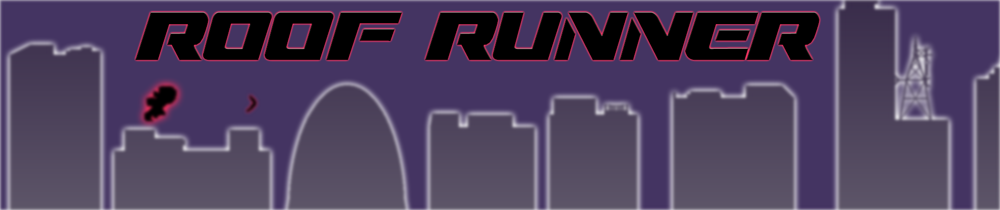
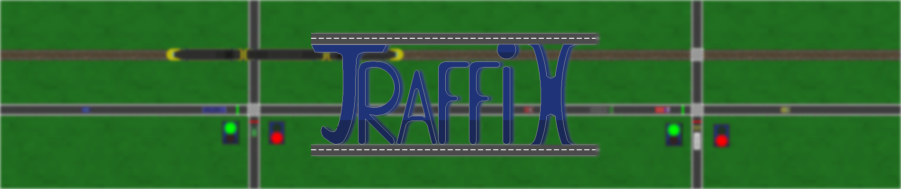
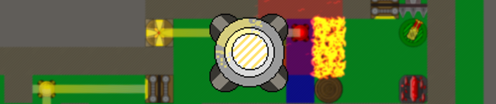

Games
This is the place where you can find my games, which I created on my own in the last year.
- Roof Runner was the first ever game I created as a school project.
- TraffiX was a game I created in the summer holiday.
- Crystall was also a school project and was made to be demo for a game concept.

Roof Runner
Roof Runner is an endless runner where you have to dodge obstacles on rooftops.
In this sidescrolling adventure you will have to run from the police as a robber.
The police force will use weapons to take you down, with the help of ground units and a backup helicopter.
You will have to fight your way out to freedom with your only weapon available, a sock boomerang
/!\ if you get stuck in the level you might have to duck in order to dodge certain obstacles. /!\
DOWNLOAD GAME HERE!

TraffiX
TraffiX is a game where you have to operate the traffic lights to safely guide traffic to their destination.
The only control you have are the traffic lights.
With these lights you have to manage the traffic flow by ordering the light to go green or red.
DOWNLOAD GAME HERE!

Crystall
In the game Crystall you have to escape as a robot from the evil robots.
You will be doing this by solving puzzles involving lightbeams and gems with different abilities.
You need to use the gems in order to overcome obstacles and defeat enemy robots and turrets.
/!\ This game is not finished and is more a proof of concept. /!\
DOWNLOAD GAME HERE!